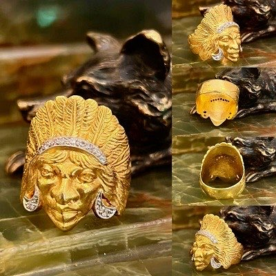
Art Nouveau · c. 1910
18kt gold figural ring
A man in a feather headdress, with diamonds accenting the headband, hair and earrings; possibly South American. Size 9.
$2,850Rings
The cases · 23 pieces shown
A small grouping from our inventory of antique jewelry, silver and other treasures. Prices are as listed by the shop; pieces sell one at a time, so please call or email to check availability.
A — Jewelry
We strive to stock the unique in antique, estate and vintage jewelry at most reasonable prices.



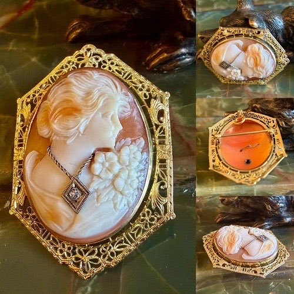
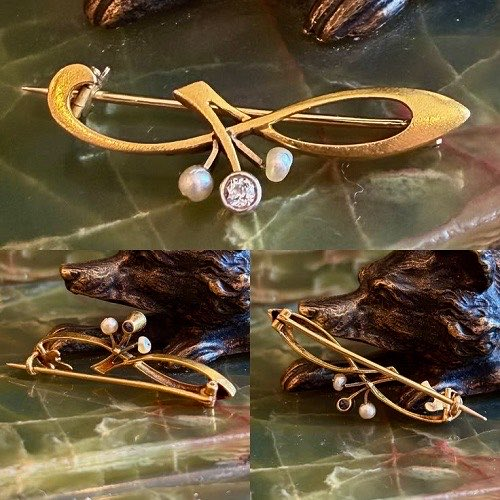
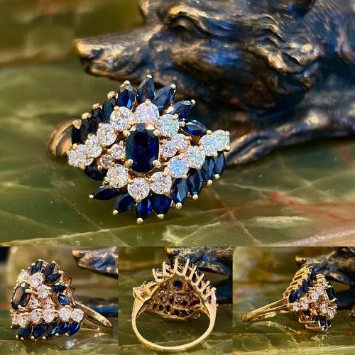
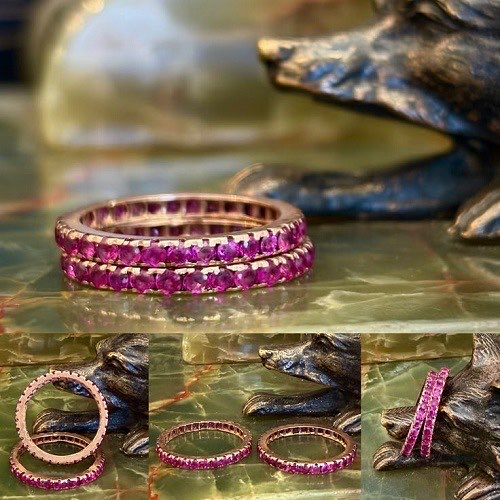

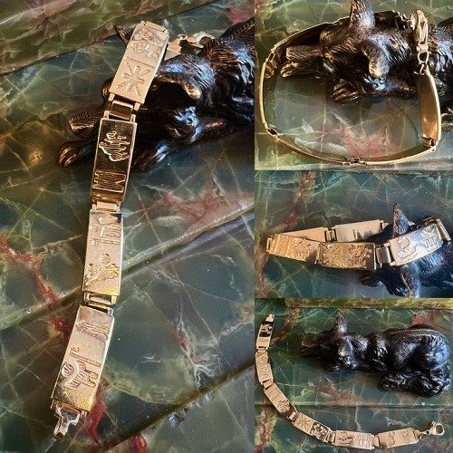


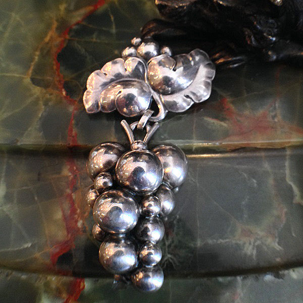
B — Silver
Ranging from elegant to unusual — silver makes dining a memorable experience, especially the pieces that provoke comment at the dinner table.
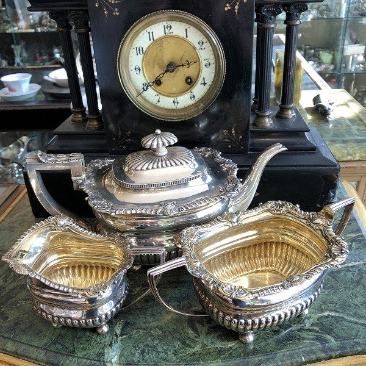
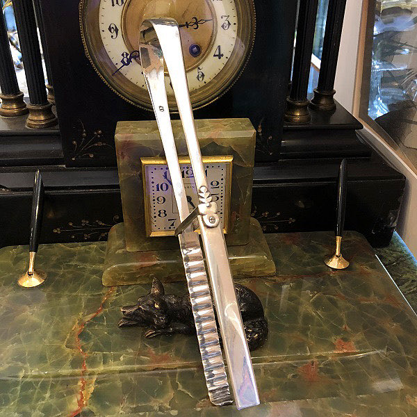
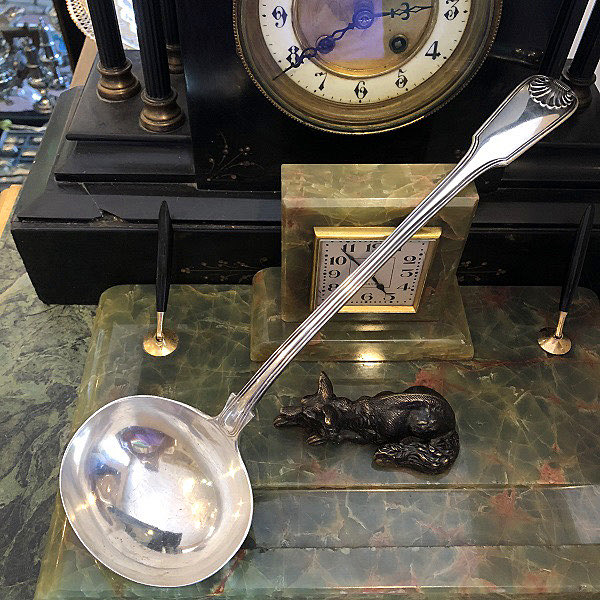
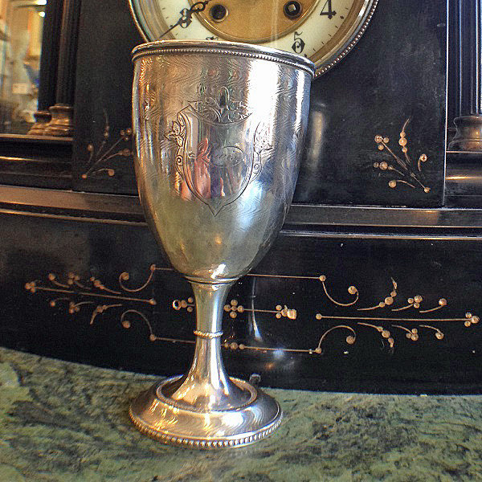
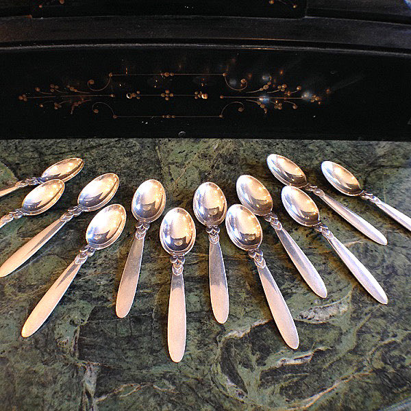
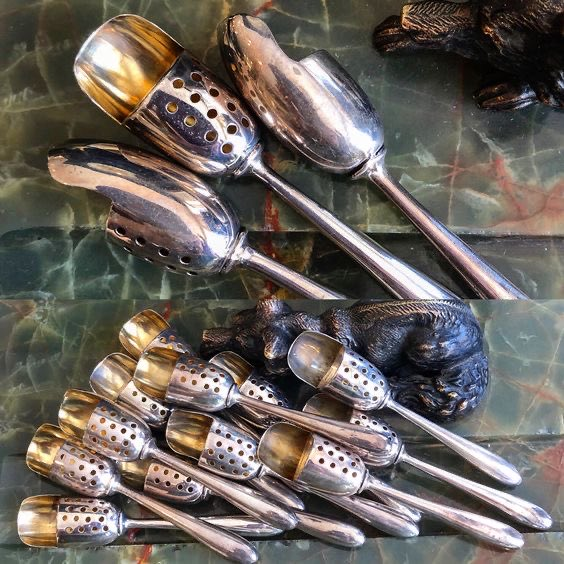
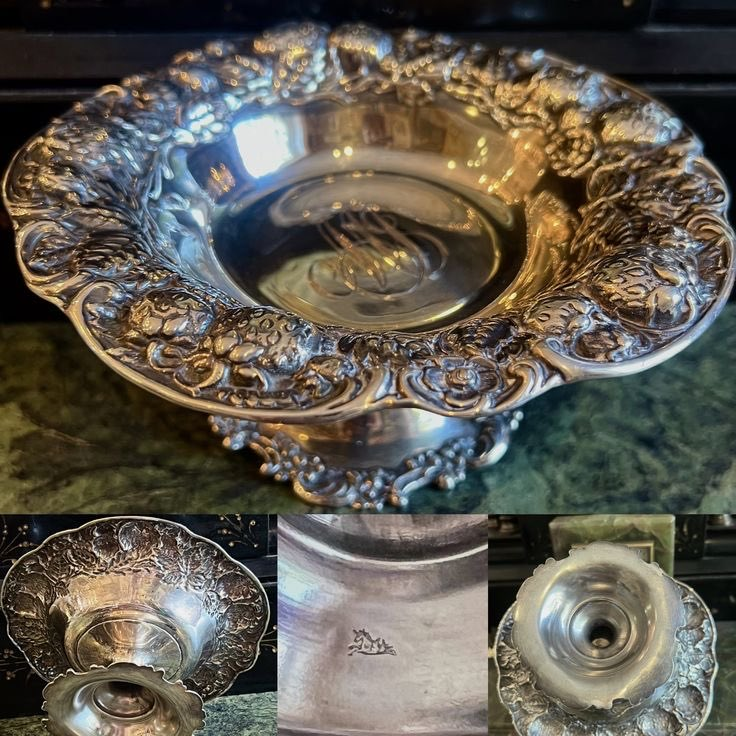
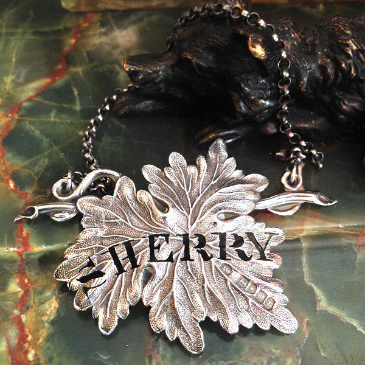
C — Other treasures
We strive to maintain the unusual — porcelains and ceramics, bronzes, and drinking and smoking accessories.
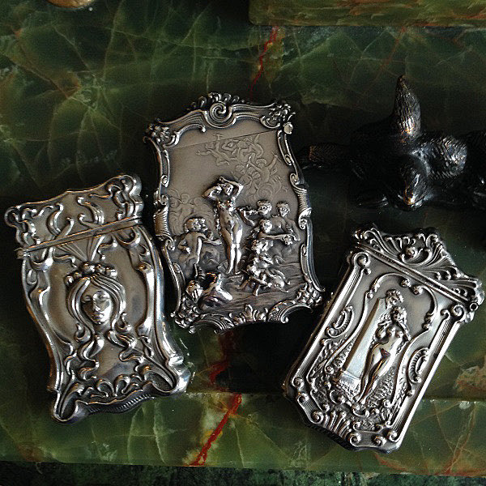
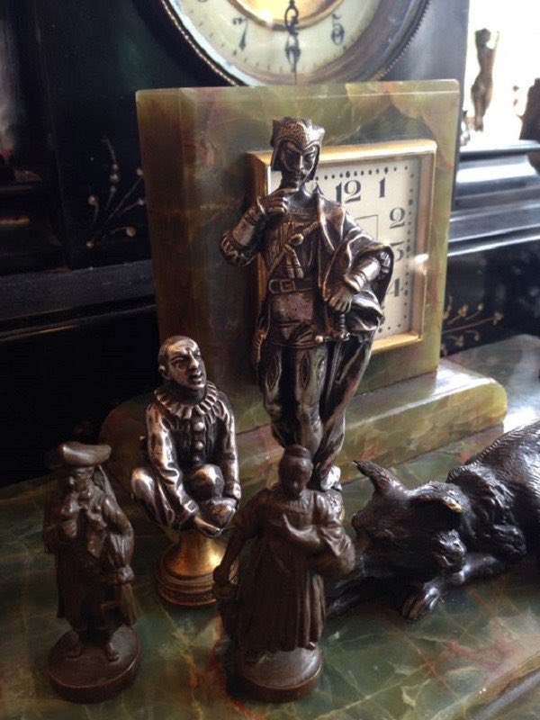
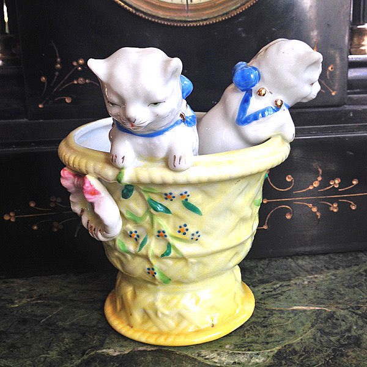
Something specific?
Leave us a message with any specific request — we are constantly on the hunt for treasures.